비서-2급 (2019-05-13 기출문제)
1과목: 비서실무
1. 다음은 비서들 간의 대화이다. 다음 중 가장 부적절한 의견을 말한 비서는 누구인가?
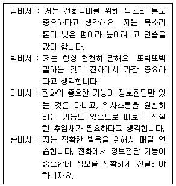
- 김비서
- 박비서
- 이비서
- 송비서
(정답률: 62%)

2. 비서의 경력관리를 위한 자기개발 노력으로 적절하지 않은 것은?
- 급변하는 사무환경에서 업무 수행에 필요한 IT 활용 능력 및 국제화 시대에 걸맞는 다양한 문화감각을 기르도록 노력한다.
- 최적의 정보와 업계의 최신 정보를 수집하기 위하여 동종업계의 선후배와의 네트워킹을 지속적으로 유지한다.
- 비서는 모든 업무 영역에 전문성을 갖추기 위해 각 부서의 업무일지나 문서양식 사본을 따로 보관하여 숙지하도록 한다.
- 자신의 업무 역량을 강화하기 위한 일환으로 본인이 담당하는 업무의 업무 개선 사항들을 기록해 둔다.
(정답률: 53%)
3. 다음 중 비서의 전화 메모 작성 및 처리와 관련하여 가장 적절한 것은?
- 전화메모를 적을 때 상사가 잘 알고 있는 사람인 경우 굳이 이름 전체를 적을 필요는 없다. 성과 직함만 적으면 된다.
- 전화 메모 시 일시, 발신자, 수신자, 통화내용을 메모한다. 통화 내용을 적을 때는 가능한 모든 내용을 메모한다.
- 전화 메모는 일정량이 모인 다음 상사에게 전달함으로써 상사의 업무 방해를 최소화한다.
- 상사 부재 중에 중요한 전화를 받게 되면 상사에게 가능한 빨리 문자나 전화로 알린다.
(정답률: 53%)
4. 상사가 제한된 시간을 효율적으로 사용할 수 있도록 비서는 상사의 일정을 관리해야 한다. 비서의 일정관리 방법으로 적절하지 않은 것은?
- 유사한 업무는 함께 처리할 수 있도록 일정을 수립한다.
- 보고, 결재 등은 가급적 시간을 정해놓고 하여 불필요한 상사 집무실 출입을 자제한다.
- 일정을 산만하게 분산하지 않도록 하고 상사가 업무에 집중할 수 있는 오전 시간은 가능한 비워둔다.
- 평소 관련 분야에서 넓은 인맥을 형성하여 다양한 정보를 획득하여 상사의 일정 계획 수립 시 활용한다.
(정답률: 49%)
5. 다수의 내방객이 방문한 상황에서 비서의 업무 자세로 적절하지 않는 것은?
- 먼저 온 손님이나 예약된 손님을 우선 안내한다.
- 기다리게 되는 다른 손님에게는 양해를 구하고 대기실로 안내한다.
- 대기실에 여러 방문객이 동석하는 경우 서로 만나지 말아야 할 상황일 때는 다른 곳에서 기다리도록 조정한다.
- 기다리는 손님으로부터 회사나 상사에 관해 질문을 받았을 경우 가능한 손님의 입장에서 필요한 내용을 설명한다.
(정답률: 68%)
6. 다음 중 상황별 비서의 전화업무 처리로 가장 바람직한 경우는?
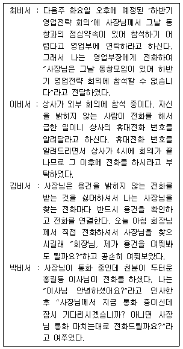
- 최비서
- 이비서
- 김비서
- 박비서
(정답률: 69%)
7. 다음은 오늘(금요일) 처리하여야 할 비서의 업무이다. 업무 순서로 가장 적절한 것은?
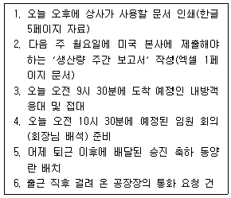
- 3 - 5 - 6 - 4 - 1 - 2
- 3 - 5 - 6 - 4 - 2 - 1
- 5 - 6 - 3 - 4 - 1 - 2
- 6 - 3 - 4 - 1 - 2 – 5
(정답률: 45%)
8. 비서의 인간관계 자세로 가장 적절한 것은?
- 직장에서의 인간관계는 기본적으로 기브앤테이크(give & take)가 바탕이 되므로 상대방에게 베푼만큼 받도록 한다.
- 조직 내에서 직원들이 상사에 대해 좋은 이미지를 가질 수 있도록 조직원들의 단체 대화방에 상사의 좋은 점을 자주 올린다.
- 조직에서 어려움을 겪는 조직 구성원의 상황을 알게 된 경우 상사에게 관련 내용을 보고한다.
- 상사에게 직접 보고하는 부서장들과 좋은 관계를 유지하기 위하여 부서장들이 필요로 하는 정보를 적극적으로 제공한다.
(정답률: 61%)
9. 상사 출장 시 항공편 예약 업무를 수행하는 비서의 업무처리 방식으로 가장 적절한 것은?
- 신속한 항공권 발권을 위해 항공권 발권 부서에 부탁하여 항공권을 받는다.
- 항공사 홈페이지에 접속하여 항공사별 가격을 비교하여 저렴한 항공권으로 예약한 후 상사에게 보고한다.
- 상사가 선호하는 항공사의 좌석이 없을 경우 다른 항공사 항공권을 구입한 후 상사에게 보고한다.
- 상사의 마일리지 누적 등을 고려하여 항공권 예약 시 상사의 마일리지 카드 회원번호를 등록한다.
(정답률: 58%)
10. 상사는 다음 주에 미국으로 2주간 출장을 갈 예정이다. 다음 중 적절하지 않은 것은?
- 출장 기간 동안 방문국의 국경일이나 공휴일이 있는지 확인하였다.
- 출장지의 기후를 인터넷을 통해 확인하였다
- 미국 사전 입국 승인을 3년 전에 이미 받았으므로 사전 입국 승인을 신청하지 않았다.
- 예약한 호텔의 입실(check-in)시간과 퇴실(check-out) 시간을 확인한다.
(정답률: 77%)
11. 다음 중 비서의 보고 자세로 가장 적절한 것은?
- 상사 집무실로 들어가 대면보고를 하려고 하는데 갑자기 말문이 막혔다. 잠시 생각할 시간을 가진 후 보고를 마쳤다.
- 상사가 외부 일정으로 외출해야 하는 상황이지만 업무 보고를 구체적이고 자세히 하였다.
- 회사 공장에 사고가 발생했다는 연락을 받아 즉시 보고하였다.
- 회사 기밀이 유출되었다는 소문을 들었다. 내일 대면보고 내용에 기밀 유출 건을 넣었다.
(정답률: 75%)
12. 다음 중 비서가 상사의 지시없이 할 수 있는 홍보업무와 가장 거리가 먼 것은?
- 상사와 관련된 기사를 정기적으로 검색하여 스크랩하고 보고한다.
- 사내에서 상사와 친밀도가 높은 임직원의 기념일을 정리하여 알려드린다.
- 상사의 외부 강연 활동에 대한 내용을 정리하여 이력서와 함께 관리한다.
- 상사의 개인 블로그를 매일 방문하여 새로운 댓글을 확인하여 알려드린다.
(정답률: 58%)
13. 외국에서 주요 인사가 우리 회사를 방문하기로 예정되어 있다. 주요 인사를 맞이할 준비를 수행하는 비서의 업무로 적절하지 않은 것은?
- 주요 인사의 인적사항과 개인적 음식 기호를 확인한다.
- 비행기 일정을 확인하여 공항 영접을 준비한다.
- 우리 회사 방문 시 사용할 VIP 전용 엘리베이터 상태를 확인한다.
- 우리 회사 도착 시 영접 인사와 함께 회사 기념품을 전달하면서 회의장으로 안내한다.
(정답률: 60%)
14. 다음 중 비서의 화법으로 바른 것은?
- 사장님, 김영수 부장님께서 잠시 뵙기를 원하십니다.
- 사장님, 회장님실에서 잠시 오시라고 연락이 왔습니다.
- 사장님, 이번 저희 회사 신제품의 시장 반응이 아주 좋으십니다.
- 사장님, 주문하신 블랙커피 나왔습니다.
(정답률: 53%)
15. 보고 업무를 수행하는 비서의 자세로 가장 적절하지 않은 것은?
- 보고의 내용에 따라 객관적인 사실 외에 전문가의 의견도 정리하여 보고하면 상사가 정책 의사결정을 하는데 도움이 된다.
- 보고는 지시한 사람에게 한다. 단 지시한 사람이 직속 상사가 아닌 경우 직속 상사에게도 관련 내용을 보고한다.
- 보고서 작성 시 상사에게 꼭 필요한 정보가 상사가 이해하기 쉽게 설명되어 있는지를 확인한다.
- 보고 시 상황이나 배경 설명을 먼저 충분히 하여 핵심적이고 중요한 내용을 상사가 이해할 수 있도록 한다.
(정답률: 38%)
16. 다음 중 한자의 쓰임이 다른 하나는?
- 祝就任
- 祝榮轉
- 祝繁榮
- 祝進級
(정답률: 35%)
17. 회의기획서에 포함될 내용으로 보기 어려운 것은?
- 회의 일시 및 장소
- 회의 주제 또는 회의 목적
- 회의 예산
- 회의 참석자 명단
(정답률: 44%)
18. 비서가 수행하는 의전 행사 지원업무에 대한 설명으로 적절하지 않은 것은?
- 행사 의전에 필요한 정보는 참석자 프로필, 공연 정보, 행사 진행 순서, 행사 내용, 드레스 코드 등이 있다.
- 참석자 프로필을 작성할 때는 참석자의 인적 사항, 우리 조직 또는 상사와의 관계, 의전에 필요한 내용 등을 포함한다.
- 일반 행사에서의 드레스 코드는 평상복이 원칙이지만 연회 등에 있어서는 white tie, black tie, business suit, informal 등으로 복장을 명시하는 경우도 있다.
- 의전 원칙은 5개로 상대에 대한 존중과 배려, 문화의 반영, 상호주의, 서열, 왼쪽이 상석이다.
(정답률: 59%)
19. 비서의 내방객 응대업무에 대한 설명으로 가장 적절하지 않은 것은?
- 내방객이 오면 곧바로 의자에서 일어서 인사를 하며, 중요한 내방객인 경우에는 방문시각에 맞추어서 문 앞에서 대기한다.
- 어떠한 용건으로 내방했는가를 확실히 파악해야 하며, 선약되어 있는 내방객이 방문하셨을 때 용건을 자세히 문의해서 업무 효율성을 높인다.
- 상사가 통화 중이거나 먼저 방문한 내방객과 면담이 끝나지 않은 상황에서 약속된 내방객이 오면 상사에게 메모로 보고한다.
- 상사가 외출 중인데 먼 곳에서 급한 일로 찾아온 경우나 평소 상사와 친분이 두터운 내방객의 경우 즉시 상사에게 전화로 먼저 보고한다.
(정답률: 51%)
20. 다음 중 비서의 업무 수행 방식으로 적절하지 않은 것은?
- 상사가 축사를 해야 하는 경우는 이전의 축사내용을 참고로하여 작성한 후 행사 담당자에게 송부한다.
- 주요 행사에 상사를 수행할 경우 비서는 상사의 기본적인 동선을 안내할 수 있어야 한다.
- 주요 의전 행사에 참석해야 할 경우 미리 복장 지침(dress code)을 확인한 후 준비한다
- 행사의 성격과 참고자료, 주요 참석자 명단을 사전에 받아 상사가 확인할 수 있도록 한다.
(정답률: 70%)
2과목: 경영일반
21. 기업은 경영성과에 직접적 영향을 미치는 이해관계자들과 관계를 맺고 있다. 다음 중 외부 이해관계자의 예가 아닌 것은?
- 금융기관
- 소비자
- 주주
- 언론매체
(정답률: 56%)
22. 다음 중 기업경영환경 중 경제적 환경의 구체적인 요인으로 표시된 것은?
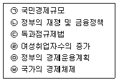
- ㉠,㉣,㉥
- ㉠, ㉢, ㉣
- ㉠, ㉡, ㉤, ㉥
- ㉠, ㉡, ㉢, ㉣, ㉤, ㉥
(정답률: 63%)
23. 다음 중 기업형태의 특징에 대한 설명으로 가장 적절하지 않은 것은?
- 합자회사는 2명 이상의 출자자가 공동으로 출자하며 회사의 채무에 대한 연대무한의 책임을 진다.
- 주식회사는 자본적 공동기업의 대표적 형태이며 출자자는 회사의 부채에 개인적인 책임을 지지 않는다.
- 공기업은 공공의 이익증진을 본질적인 목적으로 한다.
- 공사공동기업은 공기업의 장점인 자본조달의 용이성과 사기업의 장점인 경영능률향상을 결합한 것이다.
(정답률: 40%)
24. 다음 중 기업의 사회적 책임에 대한 구체적인 내용이 아닌 것은?
- 기업유지 및 발전의 책임
- 이해관계자의 이해 조정의 책임
- 외국기업과의 교류의 책임
- 지역발전과 복지향상에 대한 책임
(정답률: 52%)
25. 다음 중 주식회사의 필요상설기관인 ‘이사회’의 권한에 따른 의결사항으로 보기에 가장 적합하지 않은 것은?
- 주주총회 소집권한
- 신주의 발행 및 사채 모집
- 감사의 선임
- 대표이사의 선임
(정답률: 33%)
26. 다음 중 대기업의 특성으로 옳은 것은?
- 수평조직
- 규모의 경제
- 틈새시장
- 단순성
(정답률: 68%)
27. 다음 설명 중 중소기업의 특성으로 거리가 먼 것은?
- 기업의 규모가 작아서 창업이나, 폐업이 어려우며 환경변화에 쉽게 대응할 수 없다.
- 주로 소매업, 서비스업종의 1인 기업이 많다.
- 소유자에 의해 의사결정이 자율적으로 이루어진다.
- 대기업의 협력업체로 종속관계를 유지하는 경우가 있다.
(정답률: 63%)
28. 조직문화 형성에 영향을 주는 주요 요인으로 맞지 않는 것은?
- 조직의 역사와 규모
- 창업자의 경영이념과 철학
- 조직의 환경
- 경쟁기업의 사회화
(정답률: 61%)
29. 민츠버그(H. Mintzberg)가 말한 경영자의 역할에 해당하지 않는 것은 무엇인가?
- 대인관계 역할
- 정보관련 역할
- 환경관리 역할
- 의사결정 역할
(정답률: 46%)
30. 경영의 기본 기능 중 가장 중요한 것으로 기업이 앞으로 나아갈 방향과 각 활동이 수행되어야 할 방법을 제시하고 다른 모든 기능의 수행에 영향을 미치는 경영관리 기능은 무엇인가?
- 통제
- 지휘
- 계획화
- 조직화
(정답률: 38%)
31. 개인의 특성이 리더로서의 성공의 결정 요인으로 중요하게 보는 리더십 이론은 무엇인가?
- 행동이론
- 특성이론
- 상황이론
- 규범적 리더십이론
(정답률: 52%)
32. 허쯔버그(Herzberg)의 동기-위생이론에 대한 설명으로 옳은 것은?
- 동기요인은 높은 수준의 욕구와 관련이 있으며, 개인으로 하여금 열심히 일하게 하고 성취도를 높혀주는 요인이다.
- 동기요인은 직무 자체보다는 직무환경과 연관성이 있다.
- 위생요인은 구성원들에게 주는 만족요인이다.
- 위생요인은 심리적 성장을 추구하는 요인이다.
(정답률: 50%)
33. 마케팅믹스란 기업이 원하는 반응을 얻기 위해 사용되는 마케팅 변수의 집합이다. 마케팅 믹스의 요소인 4P에 대한 설명으로 적절치 않은 것은?
- Product - 제품
- Price - 가격
- Place - 시장
- Promotion - 촉진
(정답률: 53%)
34. 다음 중 마케팅 전략에 대한 설명으로 가장 적절하지 않은 것은?
- 집중적 마케팅은 기업의 자원이나 역량에 한계가 있는 중소기업들이 사용하는 경우가 많다.
- 제품수명주기가 도입기에 있는 경우에는 집중적 마케팅을 하는 것이 좋다.
- 경쟁사가 차별적 마케팅이나 집중적 마케팅을 하는 경우, 비차별적 마케팅을 함으로써 경쟁우위를 확보할 수 있다.
- 모든 구매자가 동일한 기호를 가지고 있는 경우에는 비차별적 마케팅이 적합하다.
(정답률: 39%)
35. 다음 중 보상관리에 대한 설명으로 가장 적절하지 않은 것은?
- 직무급은 각 직무의 상대적 가치를 평가해 등급화된 직무등급에 의거하여 임금 수준을 결정하는 임금체계이다.
- 성과급은 성과와 능률을 기준으로 임금이 결정된다.
- 직능급은 종업원의 직무수행능력을 기준으로 임금수준을 결정한다.
- 연공급은 동일노동 동일임금의 원칙을 실현하기 위해 가장 적절한 임금체계라고 할 수 있다.
(정답률: 62%)
36. 다음 중 유동자산으로 볼 수 없는 것은?
- 현금
- 재고자산
- 외상매출금
- 외상매입금
(정답률: 47%)
37. 구매한 상품의 하자를 문제 삼아 기업을 상대로 과도한 피해보상금을 요구하거나 거짓으로 피해를 본 것처럼 꾸며 보상을 요구하는 사람들을 일컫는 용어는 무엇인가?
- 프로슈머
- 컨슈머 마케팅
- 블랙 컨슈머
- 그린 컨슈머
(정답률: 73%)
38. 다음 중 ‘작은 돈을 장기간 절약하여 꾸준히 저축하면 목돈을 만들 수 있다’는 의미로 장기간 저축하는 습관의 중요성을 강조하는 용어로 가장 적절한 것은?
- 스파게티볼 효과
- 카푸치노 효과
- 카페라테 효과
- 블랙스완 효과
(정답률: 35%)
39. 다음 중 직무관리에 대한 설명으로 가장 적절하지 않은 것은?
- 직무명세서는 직무를 수행하는 데 필요한 인적요건을 중심으로 작성된다.
- 직무분석은 직무의 상대적 가치를 결정하는 것으로 보상을 결정하는 데 목적이 있다.
- 직무분석을 통해 직무기술서와 직무명세서가 작성된다.
- 직무충실화는 수직적 직무확대를 의미하며 직무확대에 비해 동기요인이 강하게 부여된다.
(정답률: 36%)
40. 아래의 사례를 설명할 수 있는 게임이론으로 가장 적절한 것은?
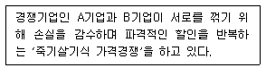
- 제로섬게임
- 죄수의 딜레마
- 세 명의 총잡이
- 치킨게임
(정답률: 47%)
3과목: 사무영어
41. Which of the followings is the MOST appropriate word for the blank?
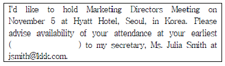
- convenience
- fast
- convenient
- comfortable
(정답률: 48%)
42. Ms. Kim wants to apply for a secretary in a company. To whom does she have to submit her application letter?
- HR manager
- sales manager
- marketing manager
- public relations manager
(정답률: 49%)
43. Which of the following is the MOST appropriate expression for the blank?
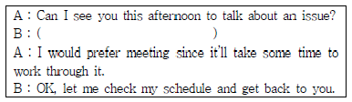
- Do you think we have to meet in person?
- Which is better, your office or ours?
- What’s the most convenient time for you?
- Is it enough with teleconferencing?
(정답률: 20%)
44. Which English-Korean pair is LEAST proper?
- promotion - 승진
- recruit - 자기 개발
- resign - 사임
- lay-off - 해고
(정답률: 45%)
45. Read the following conversation and choose one which has a grammatical error.
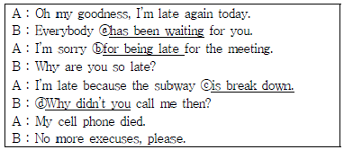
- ⓐ has been waiting
- ⓑ for being late
- ⓒ is break down
- ⓓ Why didn’t you
(정답률: 36%)
46. 아래 팩스에 대한 설명으로 가장 적절하지 못한 것은?
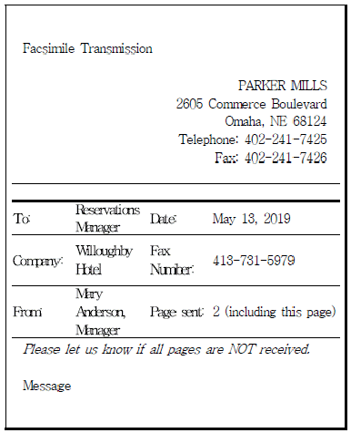
- 이 팩스의 수신인은 총 2장의 팩스 문서를 받는다.
- Mary Anderson은 Parker Mills 소속이다.
- 이 팩스의 수신인은 Willoughby Hotel의 예약관리자이다.
- 이 팩스를 받는 사람의 이름은 Mary Anderson이다.
(정답률: 47%)
47. Choose one that is the LEAST appropriate expression for the blank.
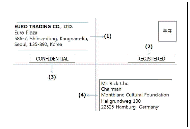
- (1) Return Address
- (2) Postal Directions
- (3) On-Departure Notation
- (4) Mail Address
(정답률: 35%)
48. What is the main purpose of this letter?
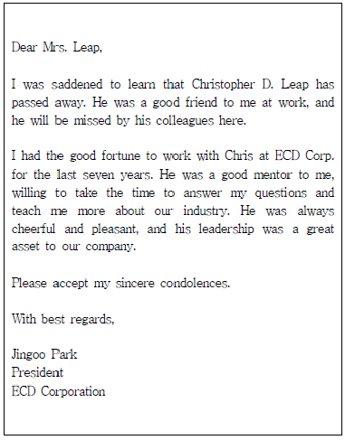
- To miss one of his colleagues who is in a business trip
- To accept his condolence
- To celebrate the achievements of his colleague
- To express his sympathy for the death of his staff
(정답률: 32%)
49. Which is MOST proper expression for the below meaning?
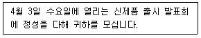
- You are cordially inviting to a demonstration of our new line of products in Wednesday, April 3.
- You are cordially invited to a demonstration of our new line of products on Wednesday, April 3.
- You are cordially inviting to a demonstration of our new line of products by Wednesday, April 3.
- You are cordially invited to our new line of products of a demonstration in Wednesday, 3 April.
(정답률: 47%)
50. Which is NOT true according to the following guidelines?
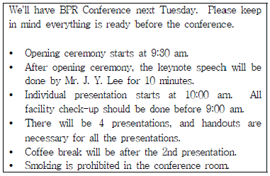
- 회의 개회식은 오전 9시 30분에 시작된다.
- 기조 연설자는 Mr. J. Y. Lee이며 기조 연설 시간은 10분이다.
- 회의실에서의 흡연은 금지된다.
- 모든 시설에 대한 확인은 개회식 직전까지 마무리되어야 한다.
(정답률: 48%)
51. Read the following conversation and choose one which is NOT true.
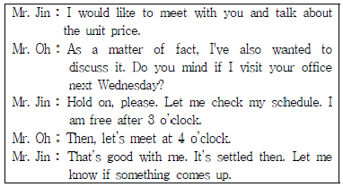
- Mr. Oh is supposed to visit Mr. Jin’s office next Wednesday.
- The schedule will not change under any circumstances.
- Mr. Oh is interested in unit price.
- Mr. Jin wants to have a face to face meeting.
(정답률: 46%)
52. After this conversation, what does the secretary have to do first?
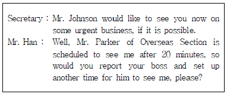
- call Mr. Parker of Overseas Section
- report Mr. Johnson to rearrange an appointment
- meet Mr. Johnson to keep an appointment
- deal with the urgent business with Mr. Han
(정답률: 45%)
53. What is MOST appropriate expression for the underlined part?
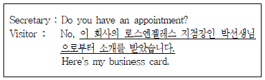
- I referred to you by Mr. Park of your Los Angeles Branch Manager.
- I referred you from Mr. Park of your Los Angeles Area Manager.
- I was referred to you by Mr. Park of your Los Angeles Branch Manager.
- I was referred by you to Mr. Park of your Los Angeles Area Manager.
(정답률: 34%)
54. Fill in the blanks with the BEST word(s).
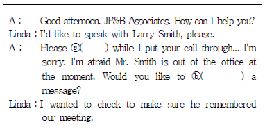
- ⓐ wait - ⓑ take
- ⓐ hold - ⓑ leave
- ⓐ hold - ⓑ take
- ⓐ wait - ⓑ get
(정답률: 46%)
55. Which of the followings is the least appropriate expression for the blank?
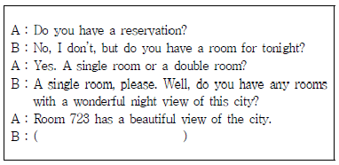
- Could you let me know what the daily rate is?
- How many nights will you stay?
- How much will that cost?
- What’s the rate per night?
(정답률: 32%)
56. Which of the following is NOT essential to be included in the Itinerary?
- Arrival time and the airport name
- hotel name
- the name of the people to meet
- the writer of Itinerary and the name of a secretary
(정답률: 50%)
57. According to the itinerary, which is NOT true?
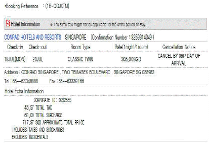
- 이 호텔에 2박 3일 숙박한다.
- 호텔 룸은 twin bedroom이다.
- 호텔 예약 취소는 호텔 도착 6일전에 호텔에 통보해야 한다.
- 3⑤.00SGD에 전체 숙박과 부대비용이 포함된 금액이다.
(정답률: 48%)
58. Which of the following BEST completes the conversation below in order?
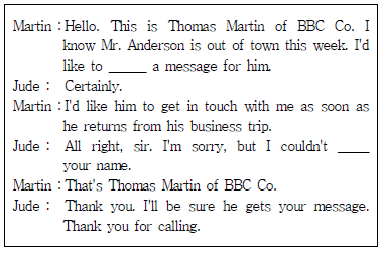
- leave - catch
- take - call
- leave - say
- take - get
(정답률: 40%)
59. Fill in the blanks with the BEST word(s).
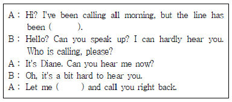
- complexing - go
- hard - down
- terrible - to cut
- busy - hang up
(정답률: 41%)
60. Which of the followings is the MOST appropriate expression for the blanks ⓐ, ⓑ, and ⓒ?
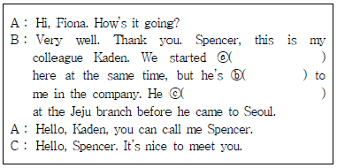
- ⓐ to working, ⓑ junior, ⓒ is used to working
- ⓐ working, ⓑ senior, ⓒ used to work
- ⓐ join, ⓑ peer, ⓒ worked
- ⓐ worked, ⓑ supevisor, ⓒ used to working
(정답률: 43%)
4과목: 사무정보관리
61. 우편물의 봉투를 내용물과 함께 보관해야 할 사례로 가장 적절 하지 않은 것은?
- 겉봉에 찍힌 소인 날짜와 편지 안의 찍힌 날짜가 동일함을 증명하기 위할 때
- 첨부되어 있어야 할 동봉물이 보이지 않을 때
- 소인이 찍힌 입찰이나 계약서 등의 서류 봉투를 법적 증거로 이용할 필요가 있을 때
- 잘못 배달된 편지가 반송되어 회신이 늦어지는 이유가 될 때
(정답률: 30%)
62. 다음 중 공문서 작성 시 표기가 가장 올바르게 된 것은?
- 2019.1.1(월)
- 10만 톤
- 2,134만 5천원
- 원장 : 홍길동
(정답률: 36%)
63. 다음 중 공문서가 아닌 것은?
- 증권회사에서 금융감독원에 제출한 보고서
- 교육부에서 시도교육청에 발송한 지침
- 공무원이 학원에 제출한 수강신청서
- 개인이 구청에 제출한 여권발급신청서
(정답률: 58%)
64. 다음 중 문서작성의 원칙이 맞는 것끼리 연결된 것을 고르시오.
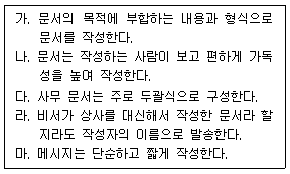
- 가, 나, 다, 라, 마
- 가, 다, 라, 마
- 가, 다, 마
- 가, 라, 마
(정답률: 40%)
65. 다음 중 감사장에 대한 설명이 옳은 것끼리 연결한 것은?
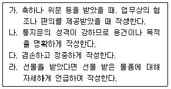
- 가, 나, 다, 라
- 가, 다, 라
- 가, 나, 다
- 가, 다
(정답률: 39%)
66. 다음 문서가 속한 문서의 유형은?
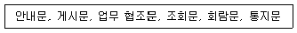
- 지시 문서
- 보고 문서
- 연락 문서
- 기록 문서
(정답률: 28%)
67. 다음 보기의 문서 관리 과정을 순서대로 올바르게 나열한 것은?
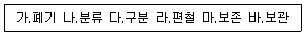
- 가 - 나 – 다 – 라 – 마 - 바
- 다 – 라 – 나 – 바 – 마 - 가
- 다 – 나 – 라 – 마 – 바 - 가
- 다 – 나 – 라 – 바 – 마 - 가
(정답률: 47%)
68. 다음 중 번호식 문서정리 방법의 장단점에 해당하는 것으로 가장 부적절한 것은?
- 번호 분류 후 제목이나 이름 가나다순으로 재배열하기 때문에 착오가 생길 우려가 있다.
- 내용 대신 번호로 부르기 때문에 기밀을 유지하기 쉽다.
- 새로운 파일을 추가해서 계속 만들 수 있어서 확장성이 좋다.
- 번호를 확인하는 과정을 거쳐야 하기 때문에 번거롭다.
(정답률: 39%)
69. 박비서는 상사의 지시에 따라 문서관리 업무를 맡게 되었다. 박비서의 문서관리 업무 방법중 가장 적절하지 못한 것은?
- 보존 기간이 지난 문서는 필요여부를 재검토한 후 적시에 폐기했다.
- 문서가 보관된 서류함이나 서랍의 위치를 표시해서 찾기 쉽게 해두었다.
- 문서관리 방법을 회사 규정에 따라 표준화시켰다.
- 원본 문서가 잘 보관되었더라도 신속하게 찾기 힘들기 때문에 부서별로 각각 복사하여 따로 보관하도록 하였다.
(정답률: 53%)
70. 전자문서를 아래와 같이 관리하고 있다. 이 중 가장 적합하지 않은 것은?
- 전자문서의 보존기한은 종이문서의 보존기한과 동일하게 적용된다.
- 전자문서의 보존기간이 장기인 경우 장기보존포맷으로 변환하여 보존매체에 수록하여 보존한다.
- PC에 저장된 전자문서는 필요여부를 재검토한 후 폐기가 확정되면, 키보드의 [Delete]키를 눌러서 삭제한다.
- 전자문서 시스템에서 전자문서를 수정하는 경우 문서의 보안 등급에 따라 접근권한을 부여받아 수정하여야 한다.
(정답률: 48%)
71. 문서 정보 관리 원칙에 대한 설명이다. 가장 적절하지 않은 것은?
- 일반 스캐너로 생성된 이미지 문서도 종이 문서와 동일한 법적 효력을 보장 받을 수 있다.
- 문서 정보는 진본성, 무결성, 신뢰성 및 이용 가능성이 보장되어야 한다.
- 중요하거나 복잡한 사항의 지시, 보고, 전달, 회람 등의 업무는 반드시 문서 정보로 처리한다.
- 모든 문서 정보의 처리는 추후 증거력이나 업무 설명 책임성을 가질 수 있어야 한다.
(정답률: 48%)
72. 명함을 관리하기 위하여 데이터베이스 관리 프로그램으로 MS-Access를 사용하고 있다. 명함에 있는 내용이 모두 입력된 테이블 중 자료의 일부만을 별도로 추출하여 새로운 데이터시트로 정리하려고 한다. 이때 사용할 수 있는 개체는?
- 레이블
- 쿼리
- 폼
- 보고서
(정답률: 23%)
73. 다음 신문기사의 내용과 가장 상관 없는 것은?
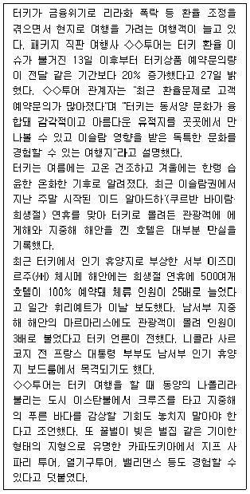
- 리라화 폭락으로 인해 동일한 금액의 리라화를 사기 위해서 더 많은 원화가 필요한 상황이다.
- 터키 여행 상품의 예약 문의 증가는 터키 환율과 연관되어 있다.
- 터키는 여름에 덥지만 습도가 높지는 않다.
- 체시메 해안은 희생절 연휴에 체류 인원이 25배 늘었고 마르마리스에는 관광객이 3배나 증가했다.
(정답률: 46%)
74. 다음 중 스마트 디바이스의 활용에 대한 설명이 가장 적절하지 않은 것은?
- PDA는 한손으로 휴대할 수 있는 크기에 정보처리기능과 무선통신기능으로 통합한 휴대용 단말기로 팜톱으로 불리며 스마트폰의 전신이다.
- 태블릿 PC는 노트북의 장점에 터치스크린 기능이 결합된 방식의 디바이스이다.
- 스마트폰은 안드로이드 운영 체제 방식과 iOS 운영 체제 방식의 2가지로만 양분되어 있다.
- 스마트폰에 회의 관련 애플리케이션인 에버노트나 리모트미팅 등을 활용하면 업무 수행에 도움이 된다.
(정답률: 37%)
75. 다음 중 랜섬웨어에 대한 설명으로 가장 부적절한 것은?
- 컴퓨터가 랜섬웨어에 감염되면 저장된 문서파일을 열 수 없다.
- 랜섬웨어란 시스템을 잠그거나 데이터를 암호화해 사용할 수 없도록 만든 뒤, 이를 인질로 금전을 요구하는 악성 프로그램이다.
- 랜섬웨어에 대비하기 위해서 중요한 파일은 데이터 백업이 필요하다.
- 랜섬웨어는 스마트폰에는 영향을 미치지 않으므로 중요한 파일은 스마트폰에 저장한다.
(정답률: 62%)
76. 다음 중 정보보안을 위한 비서의 행동으로 가장 올바르지 않은 것은?
- 비서는 상사가 선호하는 정보 보안 방식으로 보안 업무를 한다.
- 비서는 조직의 중요 기밀 정보의 접근 권한과 범위에 대하여 사내 규정을 숙지한다.
- 비서는 조직과 상사의 비밀 정보에 대한 외부 요청이 있을 경우 즉시 상사에게 보고한다.
- 비서는 상사의 집무실에서 나온 문서를 이면지로 사용한다.
(정답률: 62%)
77. 다음 중 스마트폰 애플리케이션을 활용한 업무처리와 관련한 내용으로 가장 부적절한 것은?
- 일정관리를 위해 기사님의 핸드폰에도 블루리본서베이를 다운받도록 하고 사용법을 설명한다.
- 명함 애플리케이션을 사용하더라도 종이 명함을 버리지 않고 보관한다.
- 항공 예약 관련 애플리케이션은 상사가 선호하는 항공사의 것을 다운받는다.
- 회의 녹취를 위해 핸드폰의 레코더 어플을 활용하여 녹음한다.
(정답률: 36%)
78. 비서가 상사의 발표를 준비하고 있다. 이때 효과적인 발표를 위해 가장 적절하지 않은 업무처리는?
- 비서는 발표 주제를 대변할 수 있는 템플릿을 이용하여 슬라이드마다 형식을 통일하였다.
- 발표를 위한 프레젠테이션 자료 외에 발표시 참고할 슬라이드 노트를 따로 준비하였다.
- 청중이 발표내용을 충분히 이해할 수 있도록 발표내용이 모두 포함된 유인물을 사전에 배부하였다.
- 청중의 직업과 연령대에서 주로 이용하는 것으로 알려진 SNS를 사례로 들어 발표 자료를 준비하였다.
(정답률: 39%)
79. 다음 중 개발회사와 웹브라우저 조합이 올바르게 묶이지 않은 것은?
- 애플 - 사파리
- 구글 - 크롬
- 마이크로소프트 - 익스플로러
- 아마존 - 알렉사
(정답률: 47%)
80. 다음은 그래프는 가계소득, 세금 및 사회보험 비용 증가율에 대한 그래프이다. 이 그래프를 통하여 알 수 있는 것은?
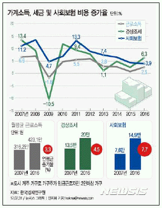
- 2007년부터 2016년까지의 사회보험 가입자 수
- 2007년부터 2016년까지의 도시 거주 가구 수
- 2007년부터 2016년까지의 월평균 근로소득 연평균 증가율
- 2007년부터 2016년까지의 임금근로자 수
(정답률: 48%)